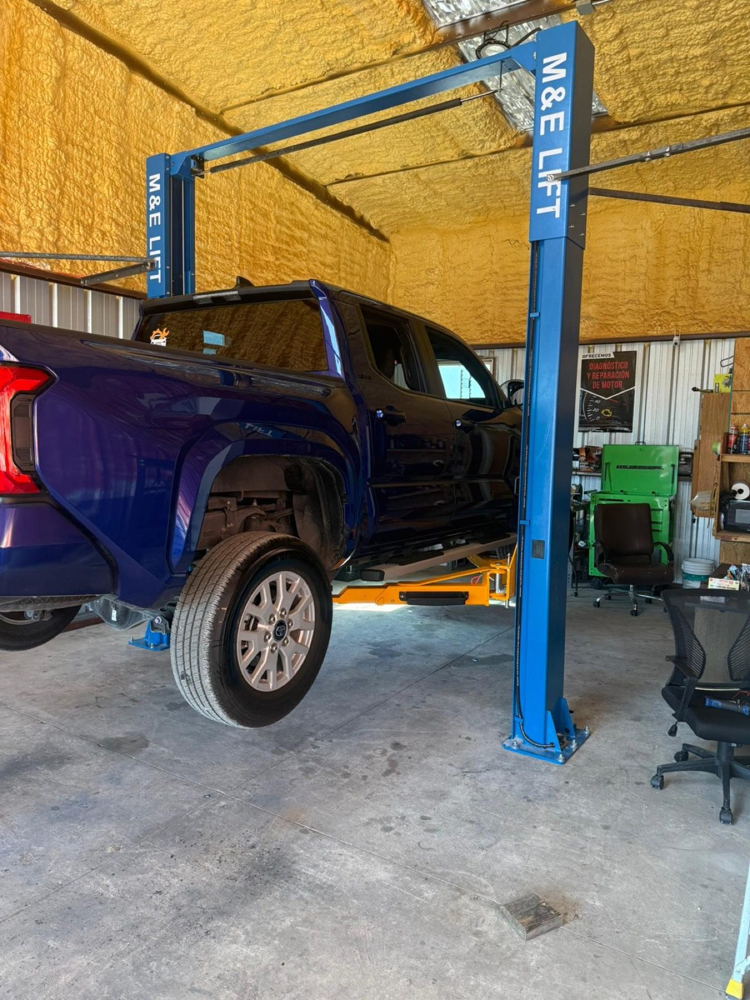

Bay 1
Diagnostic appointments
Book a diagnostic and get a clear explanation of what is wrong.
- Diagnosis
- Free estimate
Mechanic · FM 2001, Buda, TX
Fast diagnosis, clear explanations and fair prices, from radiator leaks to oil changes.

Free estimates
Cars and trucks from Buda and nearby. Book a diagnostic or repair, with a free estimate.
Book a diagnostic and get a clear explanation of what is wrong.
Oil and air filter changes, done right.
Urgent EVAP issues seen and taken care of.
Leaks diagnosed quickly, with coolant and refrigerant topped off.
Bring in the leak or the chirp and hear what it is.
Routine service for cars and trucks, with honest attention to detail.


What drivers say
4.825 Google reviewsI came to Martinez Mechanic as a recommendation from an O'reilly's employee. My radiator was leaking and needing to see a mechanic urgently. I am not from the Austin area, I am from San Antonio. He managed to diagnose my issue very quickly and he quoted me a very reasonable and fair price for the work. He also included some other work I had been needing and putting off and gave me a discount to do both jobs.
Went in with an oil leak and a chirping noise on my truck and left with a new mechanic. Yoan is hard working, welcoming and honest. The prices were beyond fair and any future mechanic needs I have will start here.
Easy 5 Stars. My EVAP needed immediate attention and he was able to get me in and taken care off. Professional, knowledgeable and a really fair pricing. Highly recommended. Thank you for the awesome and friendly service!
I recently had my 2020 Toyota serviced by Martinez, and I couldn’t be happier with the experience. From the moment I brought my car in, Martinez was friendly, professional, and made me feel like I was in good hands. He took the time to explain everything clearly and treated my car with the same care he would give his own. It’s not always easy to find a mechanic you genuinely trust, but I’m glad I found Martinez.
A working repair shop, rated 4.8 on Google.
Friendly, hard working and honest. Fair prices and a clear word on what your vehicle needs.

Find us
2775 FM2001, Buda, TX 78610
The shop is at FM 2001 in Buda. Call if it is urgent.